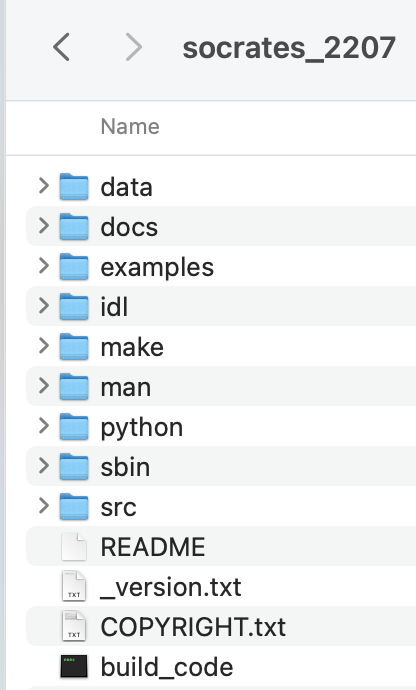
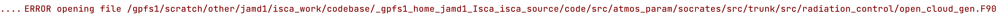

SOCRATES
To run an experiment with the SOCRATES radiation scheme, you need to get the SOCRATES source code because it is not included with Isca.
The following goes through how to modify Isca, so it can be used with SOCRATES and then how to run a simple experiment. It is based on the instructions on the Isca website.
Adding SOCRATES to Isca
Get source code
To get the source code, you require a Met Office Science Repository Service (MOSRS) account. To get one of these, email the radiation code owner which, as of November 2022, was Dr James Manners: james.manners@metoffice.gov.uk.
You should then be sent a username and then be asked to create a password.
Once you have an account, download the latest version of the SOCRATES source code from the MOSRS website (this was 22.07 as of November 2022).
Put source code in Isca directory
 The SOCRATES source code that you have just downloaded should look something like the folder on the left.
Move everything contained in this folder to: $GFDL_BASE/src/atmos_param/socrates/src/trunk/ so
that it is within the Isca source code (you may need to create the trunk folder first).
I would also add the following line to the .bashrc file:
export GFDL_SOC=/gpfs1/home/$USER/Isca/src/atmos_param/socrates/src/trunk/
/gpfs1/home/$USER/Isca/ part should be whatever GFDL_BASE is in your .bashrc file.
Edit the number of angles in the phase function
This is just step 3 from the Isca instructions.
Open the file
$GFDL_BASE/src/atmos_param/socrates/src/trunk/src/modules_core/dimensions_spec_ucf.F90
and make the following changes:
npd_k_term=14
npd_scale_variable = 4
npd_continuum = 2
npd_drop_type = 5
npd_cloud_parameter = 30
npd_phase_term = 1
Change the path_names file
As indicated in step 6 of the Isca instructions, Isca's Python front-end uses a static list of file names to be compiled for the SOCRATES version of Isca.
These are indicated in the following file:
$GFDL_BASE/src/extra/model/socrates/path_names
However, the list was compiled from a version of SOCRATES around \(17\). Thus, it is now out of date and needs updating:
- Take the original
path_namesfile and delete all names which include the directoryatmos_param/socrates/src/trunk/src/radiation_control. - Delete all names which include the directory
atmos_param/socrates/src/trunk/src/radiance_core. - Using the code below (
jamd1should be replaced with your username), find all files inradiance_coredirectory of the SOCRATES source code and add them to thepath_namesfile:import os for root, dirs, files in os.walk(os.path.abspath('/gpfs1/home/jamd1/Isca/src/atmos_param/socrates/src/trunk/src/radiance_core')): for file in files: print(os.path.join(root, file).replace('/gpfs1/home/jamd1/Isca/src/', '')) - At this stage, I would run a SOCRATES test experiment with
compile=Trueto see what errors you get. You will probably get an opening file error due to a file being specified inpath_nameswhich does not exist e.g.  If you get this, just delete the name of this file from thepath_namesfolder. For me, with v22.07 of SOCRATES, this only occured for the fileatmos_param/socrates/src/trunk/src/aux/interpolate_p.f.
Single Column
The path_names for the single column version of SOCRATES in the file
$GFDL_BASE/src/extra/model/socrates_column/path_names should also be changed as above,
with a few modifications to get the compilation to work:
As well as atmos_param/socrates/src/trunk/src/aux/interpolate_p.f, I had to delete
atmos_param/socrates/src/trunk/src/um/out_nml.f90 and
atmos_param/socrates/src/trunk/src/um/def_um_nml.f90.
I had to add atmos_param/socrates/src/trunk/src/scatter/polynomialroots.f90.
I had to edit the SWAP interface in this polynomialroots.f90 file:
INTERFACE Swap
MODULE PROCEDURE SwapDouble, SwapSingle
END INTERFACE
INTERFACE Swap
MODULE PROCEDURE SwapDouble !, SwapSingle
END INTERFACE
Otherwise I got an error:
Error: Ambiguous interfaces in generic interface 'swap' for 'swapdouble' at (1) and
'swapsingle' at (2)
Running a simple experiment
The simple SOCRATES experiment that I ran, was just taking the Frierson test experiment and making the following modifications:
- Set
albedoto \(0.38\) to reflect value used insocrates_aquaplanet.pyexample script. - Set
depthto \(5m\). - Set up the
socrates_nmlnamelist set up with the values used in thesocrates_aquaplanet.pyexample script. To do this, you will need to add theozone_1990.ncfile into theinput_dir. Thelw_spectral_filenameandsw_spectral_filenameoptions may need altering as well, to indicate the correct files e.g. in thenamelist.nmlfile given below, you would have to use your username rather thanjamd1.
Files used
The namelist.nml and diag_table files used are indicated below:
! This experiment is the same as frierson_test_case but with socrates radiation as specified
! in the socrates_aquaplanet.py example and with a mixed layer depth of 5m rather 2.5m in the mixed_layer_nml namelist.
! Albedo is also set to 0.38 as used for the byrne radiation.
! It is also run for 10 years.
! This section gives info to give to Slurm when running experiment
&experiment_details
name = 'test/socrates' ! Name of experiment e.g. data saved to folder $GFDL_DATA/name.
input_dir = '/gpfs1/home/jamd1/isca_jobs/test/socrates/'
n_months_total = 1 ! Total duration of simulation in months.
n_months_job = 1 ! Approximate duration of each job of the simulation in months.
! If n_months_total=12 and n_months_job=6, would have 2 jobs, each of length 6 months.
n_nodes = 1 ! Number of nodes to run job on (Slurm info).
n_cores = 32 ! Number of cores for each node to run job on (Slurm info).
resolution = 'T42' ! Horizontal resolution of experiment ('T21', 'T42' or 'T85').
partition = 'debug' ! Queue to submit job to (Slurm info).
overwrite_data = .false. ! If .true. and data already exists in $GFDL_DATA/name, it will be overwritten.
compile = .false. ! If .true. it will recompile the codebase before running the experiment.
max_walltime = '02:00:00' ! Maximum time that job can run e.g. '01:00:00' would be 1 hour (Slurm info).
delete_restart_files = .true. ! Only want to save 1 restart file
/
&main_nml
calendar = 'thirty_day'
current_date = 1, 1, 1, 0, 0, 0
days = 30
dt_atmos = 720
hours = 0
minutes = 0
seconds = 0
/
&idealized_moist_phys_nml
do_damping = .true.
turb = .true.
mixed_layer_bc = .true.
do_virtual = .false.
do_simple = .true.
roughness_heat = 3.21e-05
roughness_moist = 3.21e-05
roughness_mom = 3.21e-05
two_stream_gray = .false.
do_socrates_radiation = .true.
convection_scheme = 'SIMPLE_BETTS_MILLER'
/
&vert_turb_driver_nml
do_mellor_yamada = .false. ! default is True
do_diffusivity = .true. ! default is False
do_simple = .true. ! default is False
constant_gust = 0.0 ! default is 1.0
use_tau = .false.
/
&diffusivity_nml
do_entrain = .false.
do_simple = .true.
/
&surface_flux_nml
do_simple = .true.
old_dtaudv = .true.
use_virtual_temp = .false.
/
&atmosphere_nml
idealized_moist_model = .true.
/
&mixed_layer_nml
albedo_value = 0.38 ! Frierson was 0.31, need to increase for it to converge with byrne.
! socrates_aquaplanet.py also has 0.38 so keeping this value.
depth = 5.0 ! different from frierson_test_case value of 2.5
evaporation = .true.
prescribe_initial_dist = .true.
tconst = 285.0
/
&qe_moist_convection_nml
tmax = 350.0
tmin = 160.0
rhbm = 0.7
/
! Not sure why we need this namelist as we are doing simple betts miller which uses qe_moist_convection_nml
&betts_miller_nml
rhbm = 0.7
do_simp = .false.
do_shallower = .true.
/
&lscale_cond_nml
do_evap = .true.
do_simple = .true.
/
&sat_vapor_pres_nml
do_simple = .true.
/
&damping_driver_nml
do_conserve_energy = .true.
do_rayleigh = .true.
sponge_pbottom = 5000.0 ! Bottom of the model's sponge down to 50hPa (units are Pa)
trayfric = -0.25
/
&diag_manager_nml
mix_snapshot_average_fields = .false. ! time avg fields are labelled with time in middle of window
/
&fms_io_nml
fileset_write = 'single' ! default is multi
threading_write = 'single' ! default is multi
/
&fms_nml
domains_stack_size = 600000 ! default is 0
/
&spectral_dynamics_nml
damping_order = 4
water_correction_limit = 200.e2
reference_sea_level_press = 1.0e5
num_levels = 25 ! How many pressure levels to use
valid_range_t = 100.0, 800.0
initial_sphum = 2e-06
vert_coord_option = 'input' ! Use the vertical levels from Frierson 2006
surf_res = 0.5
scale_heights = 11.0
exponent = 7.0
robert_coeff = 0.03
/
! Specify vertical levels from Frierson 2006
&vert_coordinate_nml
bk = 0.000000, 0.0117665, 0.0196679, 0.0315244, 0.0485411, 0.0719344, 0.1027829, 0.1418581, 0.1894648, 0.2453219, 0.3085103, 0.3775033, 0.4502789, 0.5244989, 0.5977253, 0.6676441, 0.7322627, 0.7900587, 0.8400683, 0.8819111, 0.9157609, 0.9422770, 0.9625127, 0.9778177, 0.9897489, 1.0000000
pk = 0.000000, 0.000000, 0.000000, 0.000000, 0.000000, 0.000000, 0.000000, 0.000000, 0.000000, 0.000000, 0.000000, 0.000000, 0.000000, 0.000000, 0.000000, 0.000000, 0.000000, 0.000000, 0.000000, 0.000000, 0.000000, 0.000000, 0.000000, 0.000000, 0.000000, 0.000000
/
! Specify socrates radiation using parameters given in socrates_aquaplanet.py script.
&socrates_rad_nml
stellar_constant = 1370
lw_spectral_filename = '/gpfs1/home/jamd1/Isca/src/atmos_param/socrates/src/trunk/data/spectra/ga7/sp_lw_ga7'
sw_spectral_filename = '/gpfs1/home/jamd1/Isca/src/atmos_param/socrates/src/trunk/data/spectra/ga7/sp_sw_ga7'
do_read_ozone = .true.
ozone_file_name = 'ozone_1990'
ozone_field_name = 'ozone_1990'
dt_rad = 3600
store_intermediate_rad = .true.
chunk_size = 16
use_pressure_interp_for_half_levels = .false.
tidally_locked = .false.
solday = 90
/
"FMS Model results"
0001 1 1 0 0 0
# = output files =
# file_name, output_freq, output_units, format, time_units, long_name
"atmos_monthly", 30, "days", 1, "days", "time",
# = diagnostic field entries =
# module_name, field_name, output_name, file_name, time_sampling, time_avg, other_opts, precision
"mixed_layer", "t_surf", "t_surf", "atmos_monthly", "all", .true., "none", 2,
"socrates", "soc_olr", "soc_olr", "atmos_monthly", "all", .true., "none", 2,
"socrates", "soc_toa_sw", "soc_toa_sw", "atmos_monthly", "all", .true., "none", 2,
The first time you run it, you need to compile the SOCRATES code, which is achieved by setting
compile=True (set to False again after it has worked once). You also probably want a very short simulation
duration when debugging to check that SOCRATES is working.
I did this by setting days=3.